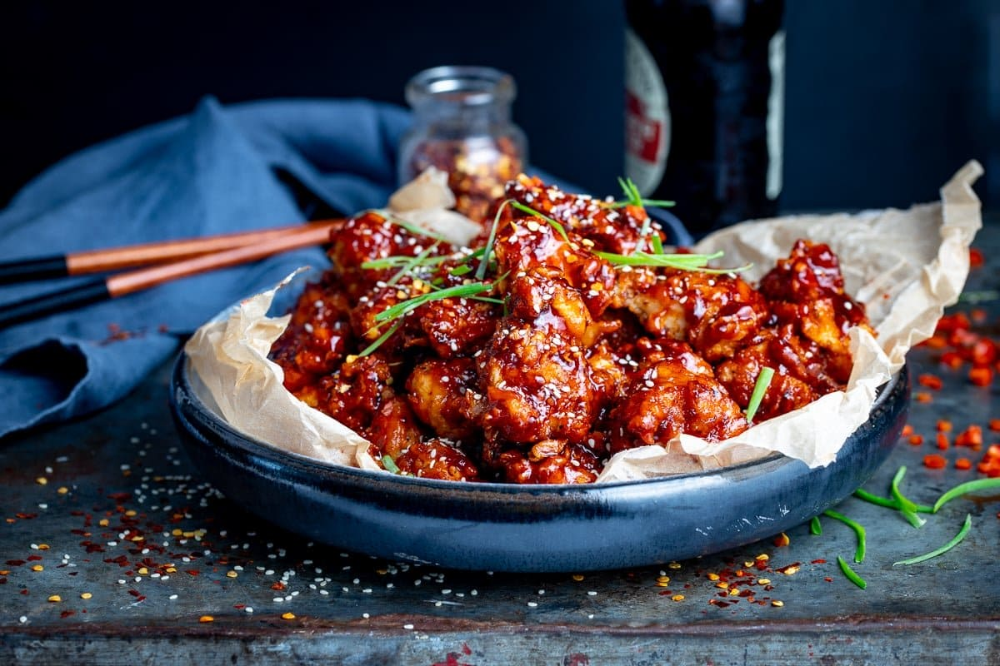

Spicy Korean Chicken

Description
Slightly spicy, slightly sweet Korean-style chicken thighs.
- 1 pound skinless, boneless chicken thighs
- 2 tablespoons soy sauce
- 2 tablespoons vegetable oil/li>
- 1½ tablespoons Korean chile paste (gochujang)
- 1 tablespoon sesame oil
- 3 cloves garlic, minced
- 1 (1 inch) piece ginger, peeled and minced
- 1 teaspoon Korean red chile flakes (gochugaru)
- Pound chicken thighs, if desired. Combine soy sauce, vegetable oil, chile paste, sesame oil, garlic, ginger, and red chile flakes in a large owl. Whisk to completely dissolve chile paste. Add chicken and stir to coat. Cover with plastic wrap and refrigerate at least 30 minutes and up to 2 hours.
- Preheat grill for medium heat and lightly oil the grate.
- Grill the chicken until slightly charred and no longer pink in the center, 5 to 8 minutes per side. An instant-read thermometer inserted into the center should read at least 165 degrees F (74 degrees C)./li>